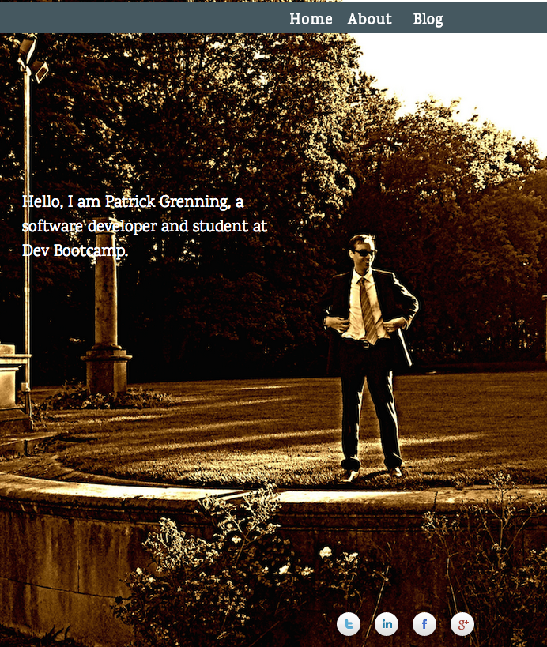
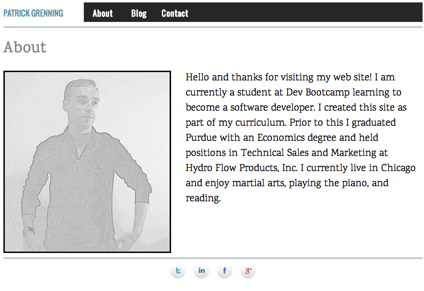

Making My Blog Professional Grade
Tuesday, September 23, 2014
In this blog post I'm reflecting on my personal website and changes I've decided to make to it. Based on a combination of feedback from others and my personal opinion here are the things I want to change on my personal website:- Combine my 'About' page and my 'Home' page. I don't have enough content for two separate pages. This will make my website simpler and make navigation easier.
- Combine the styling of the menu bar on my home page with the rest of my landing pages so I only need to change one CSS file. Basically following the DRY (don't repeat yourself) principle. Doing this will great simplify my code. In the future when I want to adjust how the menu bar or footer look I can do it from one CSS stylesheet where as before I would have to change every landing page.
- Change my background image on my index page. It looks like I have missing teeth the way the sun reflects on my mouth. Also, the text that overlays my image is difficult to read.
- Change the color scheme of the menu bar. The color of the menu bar does mesh well with my current background image
- Improve display of menu bar by allowing it to go across the entire webpage no matter the size of the browser. Before my menubar did not expand the full length of my webpage.
- Improve the 'About me' blurb. Add more content to it.
- Deploy to my Github user page to my personal URL. My new website now points to my domain name: patrickgrenning.com.
Reflection
During the process of revising my website I ended up making a very different website than what I had before. I believe my new website is more aesthetically pleasing and simpler to navigate so I am pleased with the result. I found it useful to look at other personal websites and try to implement ideas which I though worked on their sites.I also learned that overhauling websites can be a very tedious process. For every landing page I have I had to change the HTML . However, I enjoyed working on this perhaps more than anything else in Phase 0. I ended up losing track of time and worked past midnight which is a signal of how engaged I was.
I also pointed my Github user page to my domain name: patrickgrenning.com. I purchased this domain name through Go Daddy about a year ago when I was trying to get a new job. Before I created my website in Phase 0 I was using Go Daddy's website templates which were terrible because you couldn't really customize the site and they also displayed the Go Daddy logo on the page, which is annoying. It took me a couple hours to figure out how to point my Github page to my personal URL because I've never done that before. Using Gitbhub help docs and some articles on the web I was able to figure out how to do this. I noticed that the process for researching how to deploy to my personal url was very similar to researching solutions for coding challenges - both required google searches and the use of reference docs. I think I've improved a lot in my research abilities during Phase 0.
Overall, I'm happy with my new website because I think it's simple and easy to navigate.
Old Website

New Website
